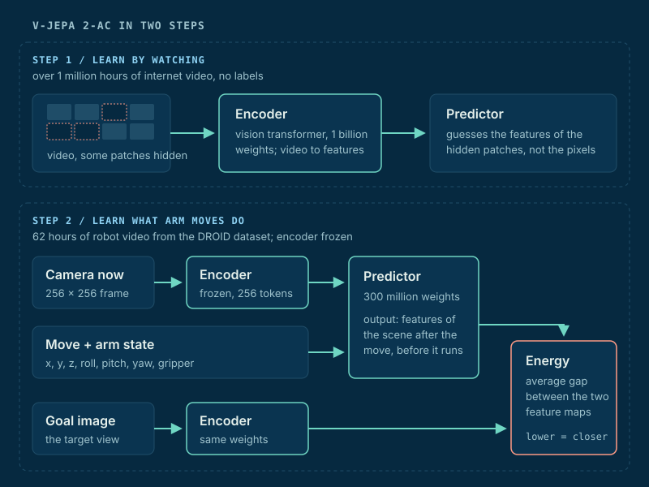
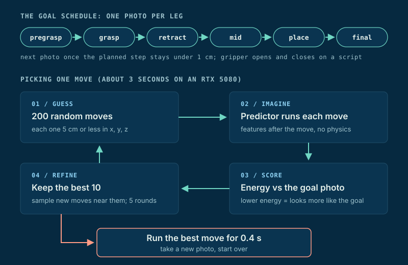
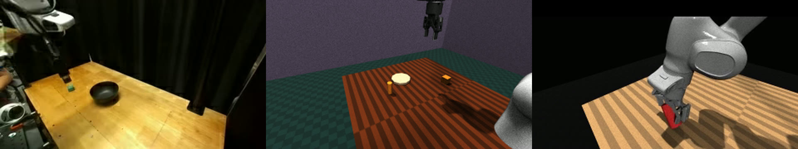
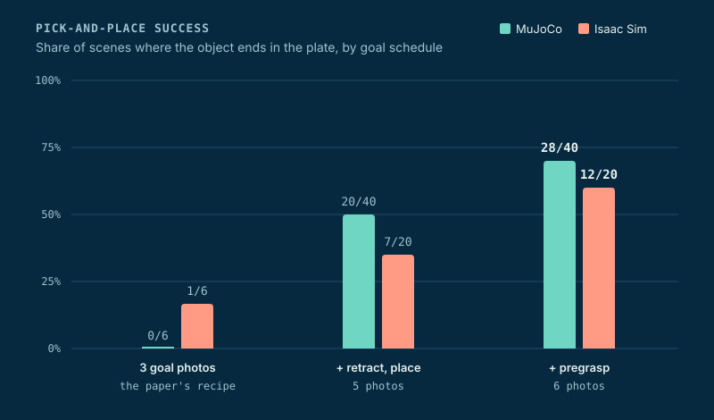

Project · World Models · Robot Manipulation
V-JEPA Pick and Place
Meta's V-JEPA 2-AC is a world model that learned from video. I got it to pick up an object and set it on a plate in simulation, with no training on the task.
The robot never learns a policy. It imagines a few hundred moves, keeps the one that looks most like a goal photo, and repeats.
Overview
Most robot learning needs demos of the exact task. V-JEPA 2-AC skips that. It watched internet video, then 62 hours of robot video, and learned how scenes change when an arm moves.
Meta showed it picking objects on a real Franka arm. I rebuilt that setup in simulation so I could run hundreds of trials, see why it fails, and fix it.
The paper's recipe got 0 of 6 pick-and-place runs in my sim. After the fixes on this page it gets 28 of 40 in MuJoCo and 12 of 20 in Isaac Sim.
How V-JEPA Sees
Picture a movie with patches of the screen covered. You can't paint the missing pixels. You can still say “there's a hand there, moving left.” V-JEPA learns that kind of guess.
An encoder turns each video frame into features: short number lists that describe what is where. A predictor sees the uncovered features and guesses the covered ones.
The key choice is guessing features, not pixels. Pixels waste effort on things nobody can predict, like carpet texture or light flicker. Features keep what matters: objects, the arm, and where they are going.

The AC stands for action-conditioned. Meta froze the encoder and trained a second predictor on robot video. It answers one question: “If the arm moves like this, what will the scene look like next?”
It is like closing your eyes and picturing your hand reaching for a cup before you move. The model does that in feature space, for any move you hand it.
How It Picks a Move
Planning is a game of hot and cold. The goal is a photo of where the arm should end up. The energy is how different the imagined scene looks from that photo. Lower is warmer.
The planner uses the cross-entropy method (CEM). It throws out 200 random moves, imagines each one, and scores them. It keeps the best 10, samples new moves near them, and repeats five times.
The arm runs the winner for 0.4 seconds. Then it takes a new photo and plans again. One move takes about 3 seconds on an RTX 5080.

One photo can't describe a whole pick-and-place, so the task is split into legs. Each leg has its own goal photo. When the planned step stays under 1 centimeter, the arm has arrived and the next photo takes over.
The goal photos come from a scripted expert on the same scene. That is a shortcut. Removing it is the next big step (see Future Work).
Building a Sim the Model Believes
The model only ever saw real lab video from the DROID dataset. A sim that looks different is a foreign country to it. So I copied DROID closely: a Franka arm with a Robotiq gripper, the same camera spots, the same control rate, and the same 7-number action.
I built it first in MuJoCo, then ported it to Isaac Sim 6.1 for better rendering. The two sims match to 1.5 millimeters on the scripted expert, so I can compare them fairly.

What Broke and What Fixed It
The first run failed every task. The arm drifted 37 to 63 centimeters from the goal. Each fix below came from measuring first, then changing one thing.
- A mirrored world. DROID video is flipped left to right, so the model's y axis pointed the wrong way. Mirroring the sim image and action took y from 15% correct to 85%.
- Camera angle beats looks. With the camera placed where DROID's was, the true move beat standing still up to 91% of the time. With the camera slightly off, 3%. Textures mattered far less.
- A noisy renderer. Isaac's real-time ray tracer added speckle noise. The noise moved the features as much as a 5 centimeter arm move. Switching to path tracing dropped the noise to zero.
- The gripper slams shut. The planner closed the gripper within three moves in 14 of 18 runs. I scripted the gripper to open and close on arrival and let the planner steer x, y, and z only.
- The arm leaves the frame. Out of view, the model is blind. A view guard keeps the hand on screen: 17 of 18 runs then ended within 3.6 centimeters.
- Dragging the object. With the paper's three photos, the arm slid the object along the table. A retract photo lifts it first: carry height went from 6 to 19 centimeters.
- Far goals feel flat. From far away, every move scores about the same. A pregrasp photo turns one long jump into two short hops.
Key Insight
Short hops beat long jumps. Legs that start under 30 centimeters from their goal arrive within 3 centimeters 90% of the time. Past 40 centimeters, only 9% do.
So the fix was not a better planner. It was better goals: more photos, each closer to the last.
Results

Reaching is nearly solved: 19 of 20 in both sims. Pick-and-place climbed from 0 of 6 to 28 of 40 in MuJoCo and 12 of 20 in Isaac Sim.
Isaac trails MuJoCo on grasping. Its gripper renders darker and its contacts are stiffer, which likely explains why the grip holds less often.
I also tried fixing the flat energy directly. A small learned distance head (1.6 million weights, 10 minutes of training) reads the model's features and guesses how far the arm is from the goal.
Without the pregrasp photo, it took pick-and-place from 6 of 20 to 14 of 20 on the same scenes. It never wanders. Its misses all happen at contact, about 3 centimeters off the grasp.
One blind spot remains. The model reads roll and pitch of the gripper well. It can't see yaw, the twist around the vertical axis: 0 of 36 test pairs. So the planner leaves rotation alone for now.
Future Work
- Drop the expert photos. The end goal is a prompt like “pick 3 red squares and place them in the bowl.” First step: render goal photos from a sim twin instead of running an expert.
- Tighter grasps. Fine-tune the predictor on close-up contact data to close the last 3 centimeters.
- See yaw. Try a closer camera and asymmetric gripper markers so the twist shows up in the image.
- Real frames. Test the distance head on real DROID video, then in Isaac Sim, then on a real arm.
- A second camera. Add a view only if it reads x and y at least 85% of the time. The one I tried did not.
Glossary
- V-JEPA
- Video Joint-Embedding Predictive Architecture: learns by predicting hidden video features (V-JEPA 2 paper)
- AC
- Action-conditioned: the predictor also takes the arm's move as input
- Energy
- Average gap between predicted features and goal features; the planner drives it down
- CEM
- Cross-entropy method: sample many moves, keep the best, resample near them
- DROID
- A large dataset of real Franka arm video from many labs; the model's robot training data
- Leg
- One piece of the task with its own goal photo, like grasp or place